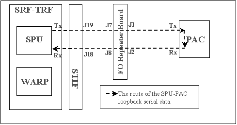

Proprietary to General Electric Company
Direction 5670006, Rev# 1
Discovery MR750w GEM Service Methods
Module Version 1.0, Version Date 4/26/07
Proprietary to General Electric Company |
Diagnostics >> Peripherals >> PAC Diagnostics
This test verifies that the MGD chassis can send data to the PAC module over the PAC's fiber optic cables.
PAC Module
The SPU-PAC communication link
None
Illustration 1: The Route Of The SPU-PAC Loopback Serial Data

In this test, the SPU on the TRF board sends serial data to the STIF board where it is sent the PAC fiber optic cable. The PAC inverts this test data and sends it back. The SPU verifies that the correct data is returned.
| NOTE: | The Test Options settings should not be changed from their default settings unless instructed to do so by a GE Healthcare engineer. There are very few circumstances when these settings ever need to be changed. |
Output values are judged pass or fail. In the event of failure, the details of the failure can be found in the GE System Log.
Although, in the case of errors you can click the 1st Error number to see the nature of the error, it is recommended that you view the GE System Log to view all the errors that were recorded.
If this test fails, perform the SPU->STIF DP to verify the PAC fiber optic communication link from the STIF (MGD chassis) to the Fiber Optic (FO) Repeater Board. .
Perform the SPU- Fiber Optic Repeater Loopback test to verify the repeater in the penetration panel (see Fiber Repeater Diagnostics).
Verify that the PAC module has power (see PAC Power-up).
Click [Calculate Time] to get an estimate of the time it will take to run the selected diagnostics.
TPS reset is required prior to scanning.